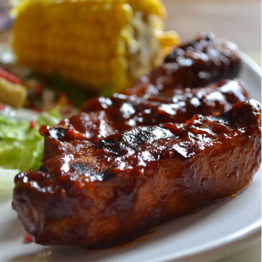

Barbecue Ribs

Barbecue Ribs
This simple barbecue Ribs recipe is guaranteed to blow your mind. It is a lean, country-style pork ribs boiled in seasoned water until tender, then finished up in the oven under a blanket of your favorite barbecue sauce as they bake to perfection.
Ingredients
- 2 1/2 pounds country-style pork ribs
- 2 tablespoons kosher salt
- 1 tablespoon garlic powder
- 1 teaspoon ground black pepper
- 1 cup barbecue sauce
Steps
- Boil the Ribs.
Bring ribs, spices, and water to a boil and cook until ribs are tender
- Coat the Ribs With Barbecue Sauce.
Place the boiled ribs in a baking dish and cover with your favorite barbecue sauce.
- Bake.
Bake the ribs, covered, until the internal temperature reaches 160 degrees F.